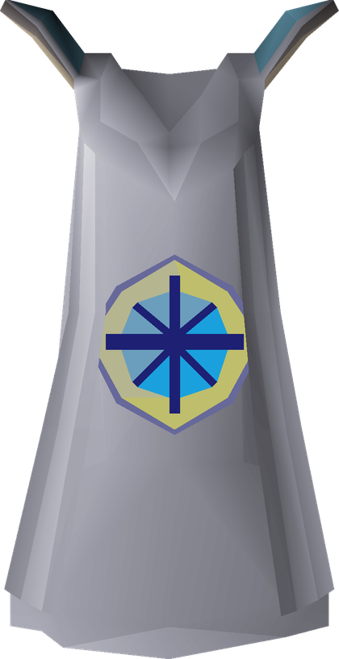
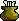

Main progression
- Quest-cape preparation
 Defence66/70
Defence66/70 Ranged56/70
Ranged56/70 Magic68/75
Magic68/75 Smithing60/75
Smithing60/75 Firemaking68/75
Firemaking68/75 Runecraft57/65
Runecraft57/65 Hunter64/70
Hunter64/70 Fishing61/70
Fishing61/70 Agility60/71
Agility60/71 Thieving56/75
Thieving56/75 Slayer50/72Combat89/100
Slayer50/72Combat89/100 Hunter and
Hunter and  Fishing come together through Drift Net Fishing
Fishing come together through Drift Net Fishing

Quest Cape- Continue following the Optimal Quest Guide
- Use quest XP before manually finishing skill requirements where possible
- All Hard Diaries
 Slayer to 9550of 95 Slayer
Slayer to 9550of 95 Slayer- Slayer remains the default activity for combat training
- Complete elite-diary skill requirements as you reach them
- Elite diary skill walls
- Train whatever individual requirements remain
- Finish the
 Diary Cape
Diary Cape
 Max Cape2of 24 skills at 99total level 1636
Max Cape2of 24 skills at 99total level 1636
Quest cape progress
Quest cape
119of 210 done
91to go
Next in the guide: A Kingdom Divided · 7 others part-finished
- 1A Kingdom Dividedon deck
- 2Lunar Diplomacy
- 3Dream Mentor
- 4King's Ransom
- 5The Blood Moon Rises
- 6Throne of Miscellania
- 7Royal Trouble
- 8Regicidestarted
- 9Mourning's End Part I
- 10Song of the Elves
- 11Making Friends with My Arm
- 12Sins of the Father
- 13Cabin Fever
- 14Perilous Moons
- 15The Heart of Darkness
- 16Beneath Cursed Sands
- 17Troubled Tortugans
- 18The Red Reef
- 19Shadows of Custodia
- 20The Final Dawn
- 21Monkey Madness II
- 22Enlightened Journey
- 23Fairytale II - Cure a Queenstarted
- 24A Taste of Hope
- 25Eadgar's Ruse
- 26Twilight's Promise
- 27Another Slice of H.A.M.
- 28The Great Brain Robbery
- 29Dragon Slayer II
- 30The Slug Menace
- 31The Fremennik Exiles
- 32Contact!
- 33The Path of Glouphrie
- 34Garden of Tranquillity
- 35Rag and Bone Man IIstarted
- 36The Ides of Milk
- 37The Giant Dwarfstarted
- 38Clock Tower
- 39Death on the Isle
- 40Scorpion Catcher
- 41A Soul's Bane
- 42The Queen of Thieves
- 43The Depths of Despair
- 44Wanted!
- 45Forgettable Tale...
- 46Zogre Flesh Eaters
- 47In Aid of the Myreque
- 48Darkness of Hallowvale
- 49One Small Favour
- 50The Ascent of Arceuus
- 51Tale of the Righteous
- 52The Forsaken Tower
- 53Between a Rock...
- 54Getting Ahead
- 55Cold War
- 56The Hand in the Sand
- 57My Arm's Big Adventure
- 58Rum Deal
- 59Meat and Greet
- 60Lair of Tarn Razorlor
- 61Ethically Acquired Antiquities
- 62Roving Elves
- 63Mourning's End Part II
- 64What Lies Below
- 65Legends' Queststarted
- 66Land of the Goblins
- 67Olaf's Quest
- 68At First Light
- 69Curse of the Empty Lord
- 70The General's Shadow
- 71His Faithful Servants
- 72Scrambled!
- 73In Search of Knowledge
- 74Swan Song
- 75Defender of Varrock
- 76Devious Minds
- 77Grim Tales
- 78Hopespear's Will
- 79Into the Tombs
- 80A Night at the Theatre
- 81The Curse of Arrav
- 82Secrets of the North
- 83While Guthix Sleeps
- 84Desert Treasure II - The Fallen Empire
- 85Barbarian Training
- 86Bear Your Soul
- 87Mage Arena I
- 88Mage Arena II
- 89The Enchanted Keystarted
- 90The Frozen Doorstarted
- 91Vale Totems
Optimal quest guideWikiSync: gxexe, 2026-07-25
Diary progress
Achievement diaries
1of 48 tiers done
47to go
Phase 3 Hard 0 of 12Phase 5 Elite 0 of 12
Counts are tasks completed per tierWikiSync: gxexe, 2026-07-25
Slayer and combat approach
Standing rules
 Nieve/Steve initially.
Nieve/Steve initially. Konar when useful for milestone points.
Konar when useful for milestone points. Duradel after 100 combat, 50 Slayer and
Duradel after 100 combat, 50 Slayer and  Shilo Village access.
Shilo Village access.- Cannon tasks to train
 Ranged.
Ranged. - Burst appropriate tasks to train
 Magic.
Magic. - Melee priority:
 Strength to ~85 first, then
Strength to ~85 first, then  Attack 80, then
Attack 80, then  Defence 75–80.
Defence 75–80. - Let Slayer and later bossing carry most combat XP rather than separately grinding combats early.
Post-diary-cape maxing order
- Slayer 99
- Combat 99s
- Strength, Attack, Defence, Ranged, Magic,
 Hitpoints, Prayer
Hitpoints, Prayer
- Slow gathering skills
 Runecraft, Agility,
Runecraft, Agility,  Mining, Fishing,
Mining, Fishing,  Woodcutting, Sailing
Woodcutting, Sailing
- Remaining buyables / faster skills
 Construction, Herblore,
Construction, Herblore,  Smithing,
Smithing,  Crafting,
Crafting, 
Cooking, Firemaking
Gaps worth noting
Fletching and Farming are already 99, so they sit outside the order above. Thieving and Hunter are not listed in either block, so decide where they land: Thieving fits with the faster skills, Hunter with the slow gathering ones.
All skills
Combat
Gathering
Artisan
Support